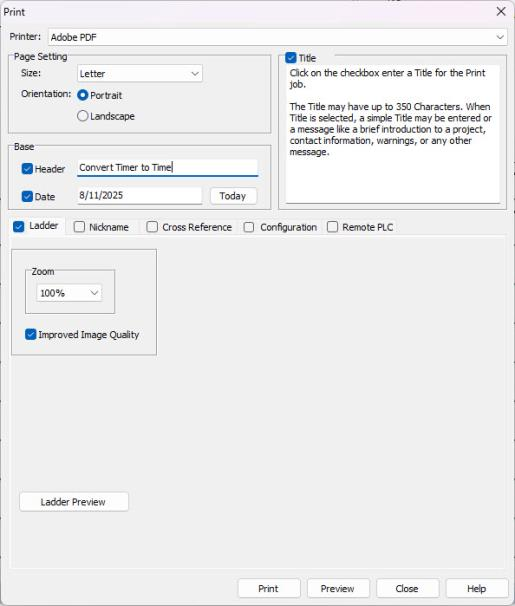
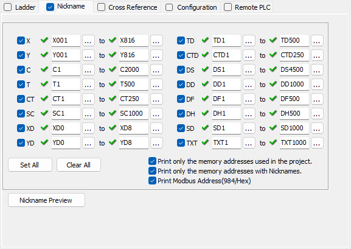
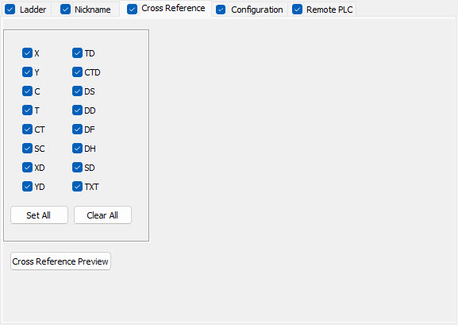
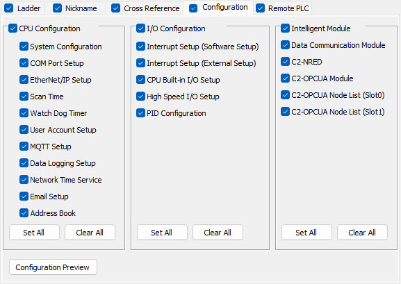
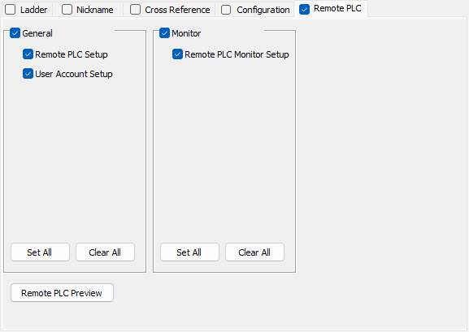
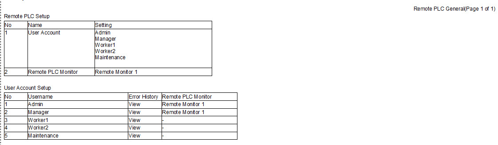

Topic: CL025

|
Topic: CL025
|

Page Setting: From this portion of the window select the Page Size and if Portrait or Landscape.
Title: Click on the checkbox to activate the Title field and enter a Title for this Print job. The Title may have up to 350 Characters. When Title is selected, a simple Title may be entered or a message like a brief introduction to a project, contact information, warnings, or any other message. When selected, the first page will only include this Title, the File Name and a Header and Date if they have been selected also. The figure below shows an example of a Preview.

Header: Click on the checkbox to activate the Header field and enter a Header for this Print job. The Header may have up to 25 Characters. The figure shown above includes an example of a Header.
Date: Click on the checkbox to activate the Date field and enter a Date for this Print job. The Date may have up to 17 Characters. You may also click on the Today button to automatically insert Today's date. The figure shown above includes an example of a Date.
Improved Print Quality: Click on the checkbox to improve the quality of the print. This will take a little longer and be a larger files size. (Depending on how many rungs in your project)
Ladder Tab: Click on the Ladder Tab to display the Ladder printing options. For more information click on the green Ladder text.
Nickname Tab: Click on the Nickname Tab to display the Nickname printing options. For more information click on the green Nickname text.
Cross Reference Tab: Click on the Cross Reference Tab to display the Cross Reference options. For more information click on the green Cross Reference text.
Configuration Tab: Click on the Configuration Tab to display the Configuration options. For more information click on the green Configuration text.
Remote PLC Tab: Click on the Remote PLC Tab to display Remote PLC options. For more information click on the green Remote PLC text.
Zoom: Click on the checkbox to include the current Ladder Logic to the Print job. You may also choose to change the size of the Ladder on the printout by clicking on the Zoom down arrow and selecting a different Zoom percentage.
Improved Print Quality: Click on the checkbox to improve the quality of the print. This will take a little longer and be a larger files size. (Depending on how many rungs in your project)
Ladder Preview and Preview Button: Click either of these buttons to see a Preview of how the Ladder Logic will look when printed. The figure below shows an example without the Title option selected.


Nickname:Click on the checkbox to activate the Print Nickname option. This will activate the fields available for this Tab and will set the Print job to include a Nickname list. Once selected, you may click on any of the checkboxes for the addresses to select to include them in the printout. Any unchecked address will not be included in the printout. You may also click on the Browse icon  to select a specific address.
to select a specific address.
Set All: Click this button to automatically Select to include ALLnicknames in the printout.
Clear All: Click this button to automatically Deselect ALL nicknames instead of deselecting one by one.
Print only the memory address used in the project: Click on the checkbox to ONLY print Nicknames that are used in the Project.
Print only the memory addresses with Nicknames: Click on the checkbox to ONLY print addresses that have a Nickname assigned on the Project
Print Modbus Address (984/Hex): Click on the checkbox to add the Modbus Address to the print.
Nickname Preview: Click this button to see a Preview of what the printout with the selected nicknames will look like.


Cross Reference: Click on the checkbox to activate the Print Cross Reference option. This will activate the fields available for this Tab and will set the Print job to include a Cross Reference list. Once selected, you may click on any of the checkboxes for the data types to select to include them in the printout. Any unchecked address will not be included in the printout. The final printout only includes any used addresses for the data types with the checkbox selected.
Set All: Click this button to automatically Select to include ALL data types in the printout.
Clear All: Click this button to automatically Deselect ALL addresses instead of deselecting one by one.
Cross Reference Preview: Click this button to see a Preview of what the printout with the selected data types will look like. The example shown below shows a Cross Reference Preview.

The Configuration Tab shown below, allows you to select to make a Printout of all the current PLC CPU Configuration and/or I/O Configurations.

CPU Configuration: Click on the checkbox to activate the Print CPU Configuration option. This will activate the selections available to include for CPU Configuration on your printout. Once selected, you may click on any of the checkboxes to select the Configuration data to include in the printout. Any unchecked Configuration data will not be included in the printout.
I/O Configuration: Click on the checkbox to activate the Print I/O Configuration option. This will activate the selections available to include for the I/O Configuration on your printout. Once selected, you may click on any of the checkboxes to select the Configuration data to include in the printout. Any unchecked Configuration data will not be included in the printout.
Set All: Click this button to automatically Select to include ALL the Configuration options in the printout. The buttons apply only to the Configuration side where they are located.
Clear All: Click this button to automatically Deselect ALL the Configuration options instead of deselecting one by one. The buttons apply only to the Configuration side where they are located.
Configuration Preview: Click this button to see a Preview of what the printout with the selected data types will look like. The example shown below shows a Preview of the CPU Configuration with all the options selected.


General: Click on the checkbox to activate the Print General option. This will activate the selections available to include for General on your printout. Once selected, you may click on any of the checkboxes to select the General data to include in the printout. Any unchecked General data will not be included in the printout.
Monitor: Click on the checkbox to activate the Print Monitor option. This will activate the selections available to include for Monitor on your printout. Once selected, you may click on any of the checkboxes to select the Monitor data to include in the printout. Any unchecked Monitor data will not be included in the printout.
Set All: Click this button to automatically Select to include ALL the Remote PLC options in the printout. The buttons apply only to the Remote PLC side where they are located.
Clear All: Click this button to automatically Deselect ALL the Remote PLC options instead of deselecting one by one. The buttons apply only to the Remote PLC side where they are located.
Remote PLC Preview: Click this button to see a Preview of what the printout with the selected data types will look like. The example shown below shows a Preview of the Remote PLC with all the options selected.
